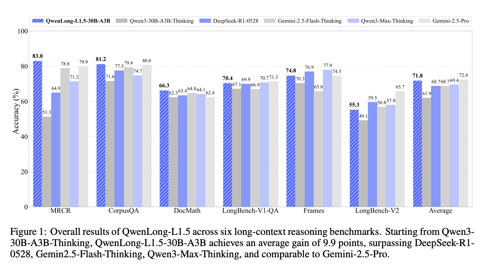
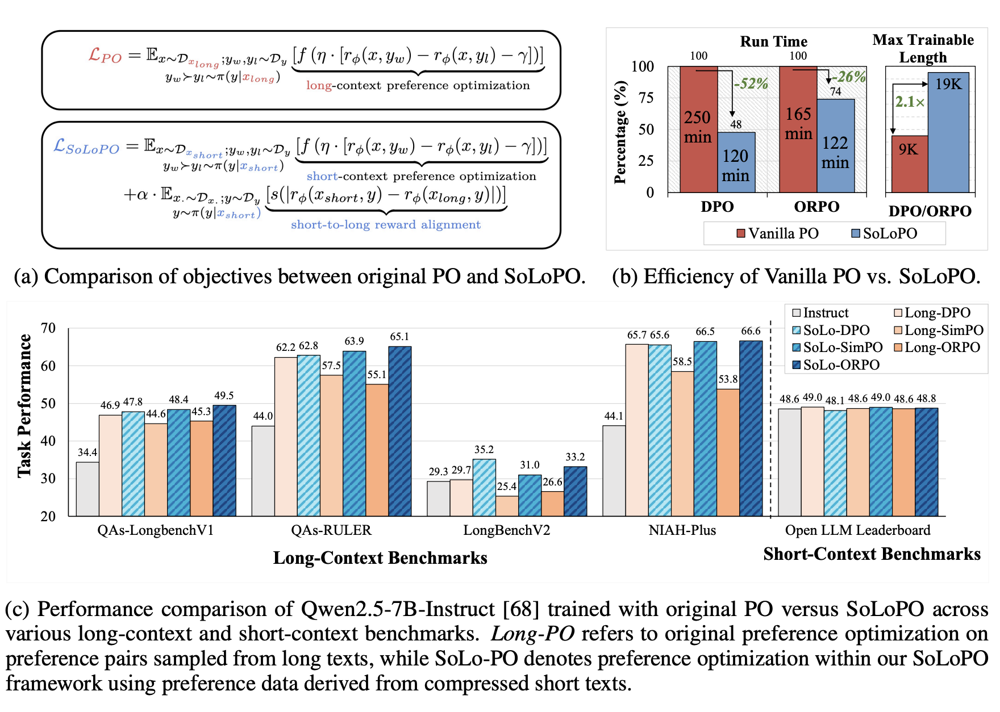
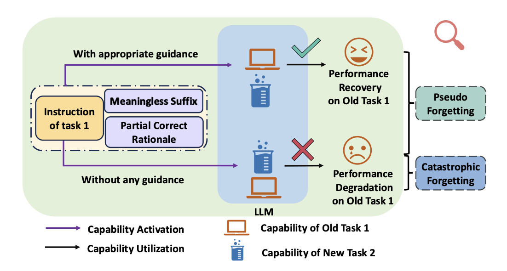
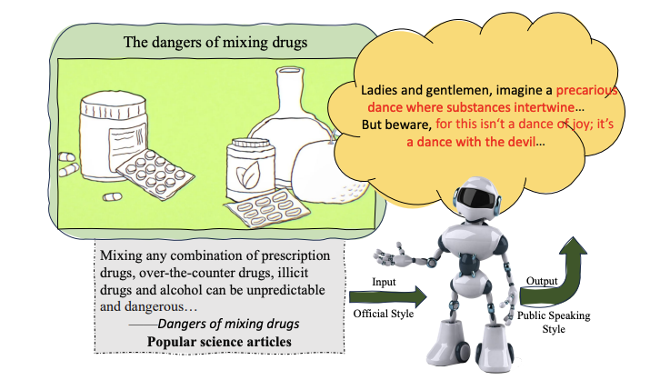
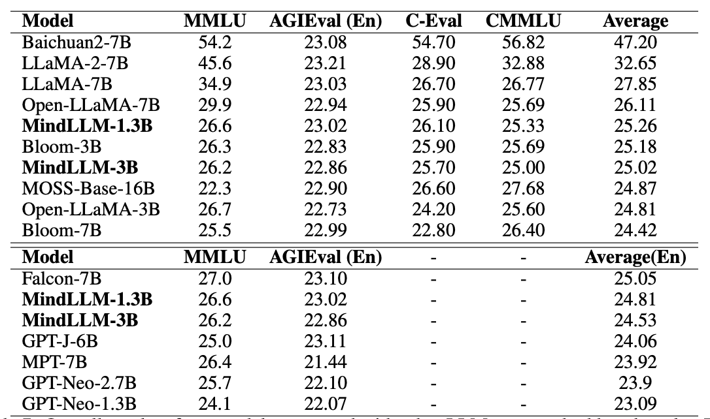
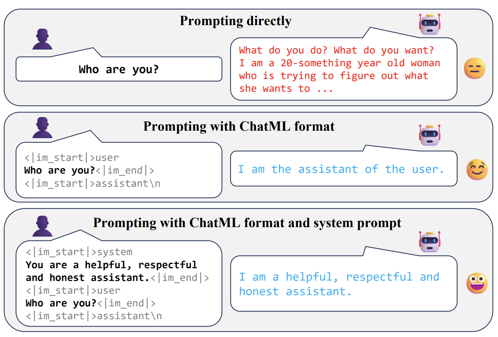
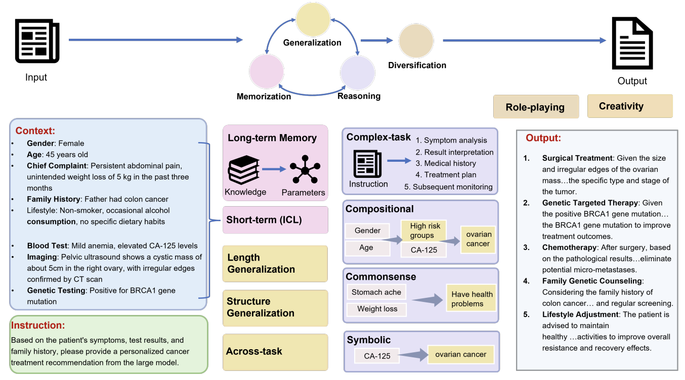
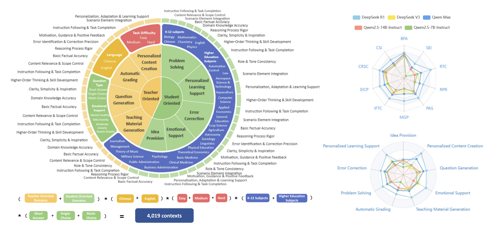

Research
I am fascinated by natural language processing🤖💭 and curious about the capabilities of large language models (LLMs) and underlying mechanisms 🔍.
Currently, I focus on long-context language modeling, particularly efficient training and inference 📝⚡ (e.g., sparse attention, context compression, and long-context alignment).
Previously, I worked on continual learning and long-text style modeling 🔄🎨 of LLMs.
My research aims to enhance models' real-world applicability while making them more controllable and safe 🎯🔒.
Representative papers are highlighted.
|
|

|
QwenLong-L1.5: Post-Training Recipe for Long-Context Reasoning and Memory Management
Weizhou Shen, Ziyi Yang, Chenliang Li, Zhiyuan Lu, Miao Peng, Huashan Sun, Yingcheng Shi, Shengyi Liao, Shaopeng Lai, Bo Zhang, Dayiheng Liu, Fei Huang, Jingren Zhou and Ming Yan
technical report, 2025
[GitHub]
[Paper]
We introduce QwenLong-L1.5, which enhances long-context reasoning through three key innovations: a data synthesis pipeline for complex multi-hop reasoning, stabilized reinforcement learning for extended sequences, and a memory-augmented architecture for ultra-long contexts (up to 4M tokens).
Built on Qwen3-30B-A3B-Thinking, the model rivals top competitors like GPT-5 and Gemini-2.5-Pro, improving its baseline by 9.90 points on reasoning benchmarks and achieving a 9.48-point gain on ultra-long tasks.
|
|

|
SoLoPO: Unlocking Long-Context Capabilities in LLMs via Short-to-Long Preference Optimization
Huashan Sun*, Shengyi Liao*, Yansen Han, Yu Bai, Yang Gao, Cheng Fu, Weizhou Shen, Fanqi Wan, Ming Yan, Ji Zhang and Fei Huang
Under review, 2025
[GitHub]
[Paper]
We propose a framework named Short-to-Long Preference Optimization (SoLoPO), decoupling long-context preference optimization (PO) into two components: short-context PO and short-to-long reward alignment (SoLo-RA), supported by both theoretical and empirical evidence.
SoLoPO enhances mainstream algorithms (DPO, SimPO, ORPO) with superior performance on long-context benchmarks and improved training efficiency.
For example, SoLoPO reduces DPO run time by 52% and doubles the maximum trainable sequence length.
|
|

|
Unveiling and Addressing Pseudo Forgetting in Large Language Models
Huashan Sun, Yizhe Yang, Yinghao Li Jiawei Li, Yang Gao
ACL 2025 Findings, 2025
[GitHub]
[Paper]
We Identify and validate the pseudo forgetting phenomenon in LLMs, demonstrating that performance degradation on previously learned tasks stems from reduced instruction dependency rather than actual capability loss.
We propose Rationale-Guidance Difficulty based Replay framework for continual learning, which effectively mitigates pseudo forgetting while maintaining model plasticity.
|
|

|
PSST: A Benchmark for Evaluation-driven Text Public-Speaking Style Transfer
Huashan Sun*, Yixiao Wu*, Yuhao Ye, Yizhe Yang, Yinghao Li, Jiawei Li and Yang Gao
EMNLP 2024 Findings, 2024
[GitHub]
[Paper]
Public-Speaking Style Transfer (PSST) is an complex, passage-level, scalable, and downstream application-oriented text style transfer task. We started from linguistics and real-world data to analyze the key features of "public speaking style" and proposed fine-grained evaluation metrics for such complex long-text style transfer tasks. Comprehensive experimental results reveal that current LLMs suffer from over-stylization, uneven style strength distribution, and severe semantic degradation problems.
|
|

|
MindLLM: Pre-training Lightweight Large Language Model from Scratch, Evaluations and Domain Applications
Yizhe Yang*, Huashan Sun*, Jiawei Li, Runheng Liu, Yinghao Li, Yuhang Liu, Yang Gao and Heyan Huang
AI Open, 2024
[Huggingface]
[Paper]
MindLLM is a series of bilingual lightweight large language models with 1.3B and 3B parameters, trained from scratch to provide efficient alternatives to larger models. We detail the complete development process including data construction, model architecture, evaluation, and practical applications, with MindLLM achieving performance comparable to or exceeding larger open-source models on public benchmarks.
|
|

|
How Far Can In-Context Alignment Go? Exploring the State of In-Context Alignment
Heyan Huang (Prof.), Yinghao Li, Huashan Sun, Yu Bai and Yang Gao
EMNLP 2024, 2024
[Paper]
We investigate the mechanism and applicability of In-Context Alignment (ICA) through ablation (format, system prompt, and example) experiments and comprehensive evaluations.
Our findings indicate that (1) the example part is crucial, (2) compared to fine-tuning, ICA demonstrates superior performance in knowledge-based tasks and tool-use tasks,
(3) ICA still exhibits limitations in areas such as multi-turn dialogues and instruction following.
|
|

|
Fundamental capabilities and applications of large language models: A survey
Jiawei Li, Yizhe Yang, Yu Bai, Xiaofeng Zhou, Yinghao Li, Huashan Sun, Yuhang Liu, Xingpeng Si, Yuhao Ye, Yixiao Wu, Yiguan Lin, Bin Xu, Bowen Ren, Chong Feng, Yang Gao, Heyan Huang
ACM Computing Surveys, 2025
[Paper]
In this survey, we review recent advances of LLMs in domain applications, aiming to summarize the fundamental capabilities and their collaboration. Furthermore, we establish connections between fundamental capabilities and specific domains, evaluating the varying importance of different capabilities. Based on our findings, we propose a reliable strategy for domains to choose more robust backbone LLMs for real-world applications.
|
|

|
EduBench: A Comprehensive Benchmarking Dataset for Evaluating Large Language Models in Diverse Educational Scenarios
Bin Xu*, Yu Bai*, Huashan Sun*, Yiguan Lin*, Siming Liu, Xinyue Liang, Yaolin Li, Yang Gao and Heyan Huang
Preprint, 2025
[Github]
[Paper]
We introduce the first comprehensive benchmark for evaluating large language models in educational settings, featuring 9 major scenarios and over 4,000 educational contexts.
We develop multi-dimensional evaluation metrics covering 12 key aspects important to educators and students, validated through human annotation.
Edubench provides a practical foundation for developing and evaluating education-focused language models.
|
Education
Master of Engineering Candidate, Artificial Intelligence, Beijing Institute of Technology (2023.09 - 2026.06).
Bachelor of Engineering, Artificial Intelligence, Beijing Institute of Technology (2019.09 - 2023.06).
|
Experience
Research Intern at NLP, Tongyi, Alibaba, supervised by Dr. Ming Yan. (2024.12 - 2025.10).
Recommendation Algorithm Intern, Rednote, supervised by Dr. Man Xu. (2022.10 - 2023.02).
|
|
{kind=link}